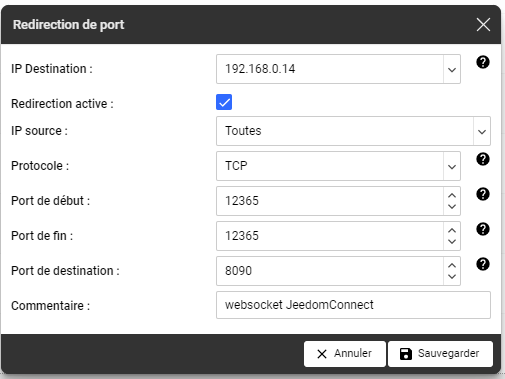
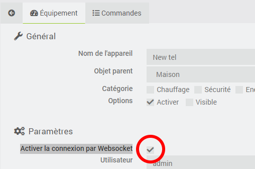
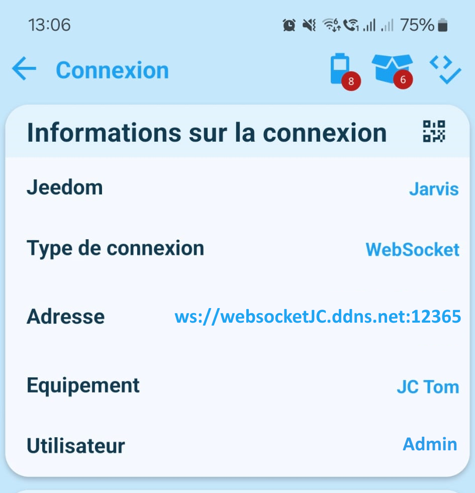
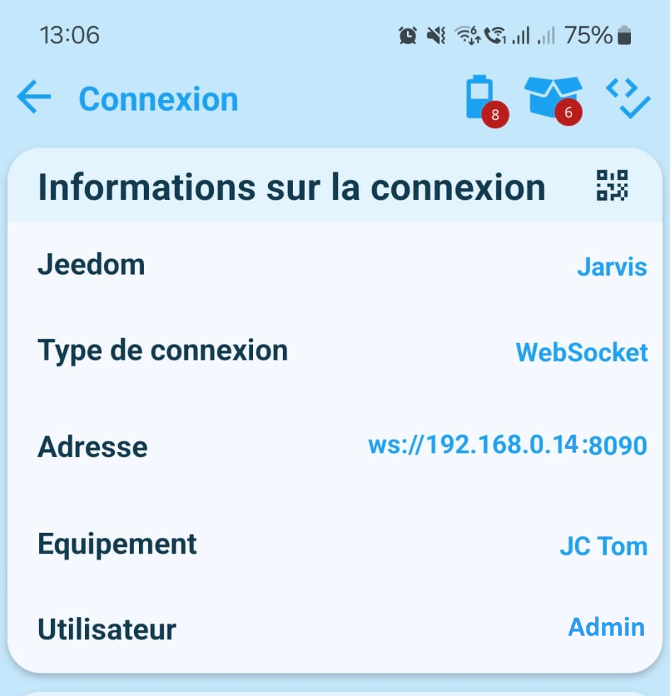

Connexion HTTP/Websocket
Quelle est la différence entre connexion HTTP, Websocket et Polling ?
Avec Jeedom Connect, il est possible d'établir la connexion entre votre appareil et le plugin de trois façons différentes :
- Http : Au lancement de l'application, une connexion Http de type Source Event Server est établie avec le plugin. Cette connexion est persistente mais uni-directionnelle : de Jeedom vers votre appareil. Les actions de votre appareil vers Jeedom sont des requêtes Http uniques utilisant le protocole JSON RPC. Ce mode de connexion ne necéssite aucune configuration particulière.
- Polling : Lorsque les états ont du mal à être rafraichi, vous pouvez utiliser cette option. Ici c'est l'application qui lance une connexion vers le plugin pour forcer la récupération des informations de façon régulière. Cette option est plus que conseillée lorsque vous utilisez les DNS Jeedom (incompatible avec
websocket). - Websocket : La connexion websocket est quant à elle bi-directionnelle. Elle nécessite néanmoins une configuration de votre réseau pour être utilisée en dehors de votre réseau local. Il est possible de faire une redirection de port sur votre routeur (méthode simple) ou bien de configurer votre serveur proxy ou le serveur Apache de votre Jeedom (utilisateurs avancés, incompatible avec
polling).
Le Websocket offre une connexion plus stable et plus performante que la connexion Http.
Quelles modifications sont à faire pour obtenir une connexion en Websocket ?
Pré-requis
Ce qu’il va nous falloir pour l’utilisation du websocket :
- avoir un nom de domaine qui est redirigé vers son IP publique
- ouvrir un port sur sa box pour que la communication soit faite avec jeedom
Je vous laisse vous renseigner sur le net pour connaitre les risques d’avoir un port ouvert depuis l’extérieur
Etape 1 - Créer un nom de domaine
Il existe tout un tas de façon d'avoir un nom de domaine.
- Soit simplement en acheter un ultra personnalisable en ".fr", ".com" ou pleins d'autres choses (pour quelques euros par an)
- Soit utiliser des services gratuits qui existent sur le net ➡️ c'est celui que je vais utiliser ici.
Je vais utiliser les services de No IP
une fois que vous avez créé un compte, cliquez sur
- no-ip hostnames
- create hostname
- remplissez les informations demandées à l'écran :
- hostname : le nom que vous allez utilisez ➡️ ici j'ai choisi
websocketJC - domain : ce qui va être utilisé comme adresse, il y a plusieurs choix possibles. certains gratuits, d'autres non ! ➡️ ici je garde le choix par défaut
ddns.net - record type : on le laisse sur
DNS Host (A) - IPv4 Address : elle est normalement déjà pré-rempli avec votre IP Public. (à vérifier et modifier si nécessaire)
- hostname : le nom que vous allez utilisez ➡️ ici j'ai choisi
Validez.
A partir de maintenant, vous avez une adresse internet websocketJC.ddns.net qui est redirigée vers votre adresse IP.
Le nom de domaine que vous venez de créer est disponible gratuitement pendant 30 jours seulement.
Sans action de votre part après ce délai, il est supprimé ; pensez à cliquer sur le bouton "renouveller" 1 fois par mois (directement sur leur site)
Etape 2 - Créer une redirection de port
La redirection de port va permettre à votre routeur de savoir gérer les informations qui lui arrivent.
En gros : lorsque je reçois une demande sur le port X il faut renvoyer cette demande sur la machine Y et sur le port Z.
Ici ce qu'on va vouloir faire c'est lui dire :
lorsque tu reçois une demande sur le port X, renvoie cette demande sur mon jeedom sur le port 8090.
Le port 8090 est le port configuré par défaut pour JeedomConnect. Si jamais ce port est déjà utilisé sur votre installation vous pouvez en choisir un autre ➡️ pensez à le modifier dans l'écran de configuration du plugin.
Connectez vous à l'interface administrateur de votre box/routeur et indiquez la redirection à faire.
Sur une freebox : (mais les infos sont sensiblement pareil sur toutes les box)
J'indique :
- IP de destination :
192.168.0.14➡️ là où il y a mon jeedom ! (à personnaliser donc :) ) - Protocole :
TCP - Port de début et port de fin :
12365➡️ à vous de définir le numéro de port "exotique" que vous souhaitez utiliser - Port de destination :
8090➡️ c'est le port websocket utilisé par JeedomConnect
Sauvegarder.
A partir de maintenant, chaque demande reçue sur le port 12365 de ma box sera automatiquement transférée vers le port 8090 sur l'ip 192.168.0.14 de mon réseau.
Etape 3 - Configuration sur le plugin JC
La prochaine étape consiste à donner l'ensemble des ces informations à JeedomConnect, de façon à ce que les connexions puissent correctement avoir lieu.
Rendez vous sur la page Configuration du plugin :
Renseignez le champ Adresse externe websocket avec les informations du nom de domaine que vous avez précédemment créé ainsi que le numéro de port que vous avez choisi ➡️ dans cet exemple ça nous donne : ws://websocketJC.ddns.net:12365
Vous pouvez également renseignez le champs Adresse interne websocket avec vos informations locales (et donc sans la redirection de port cette fois) ➡️ pour moi ca sera ws://192.168.0.14:8090
Pensez également à vérifier que le Port d'écoute du websocket est bien le même que celui que vous avez indiqué lors de la création de la redirection du votre box ➡️ par défaut le 8090
Cliquez sur le bouton Sauvegarder
Assurez vous que le démon est bien OK
Etape 4 - Configuration de l'équipement JC
Le plus gros de la configuration vient d'être réalisée. Il faut maintenant définir si un équipement JC doit utiliser le websocket ou pas.
Pour cela, sélectionnez un de vos équipement créé sous JC, et cochez la case Activer la connexion par Websocket, puis Sauvegarder.
Si vous utilisez la connexion par QR Code, alors il faut en créer un nouveau ➡️ clic sur Regénérer le QR Code, puis Sauvegarder à nouveau.
Vous pouvez maintenant aller sur votre téléphone et scannez le qr code. Une fois connectée, vous devriez retrouver vos informations de connexion dans le menu de l'application :
ou si vous êtes connectés en wifi, vos informations locales :
Vous avez donc maintenant des remontées d'informations et mise à jour de vos commandes beaucoup plus rapidement !
Il ne vous reste plus qu'à profiter de votre nouvelle configuration ! 😁